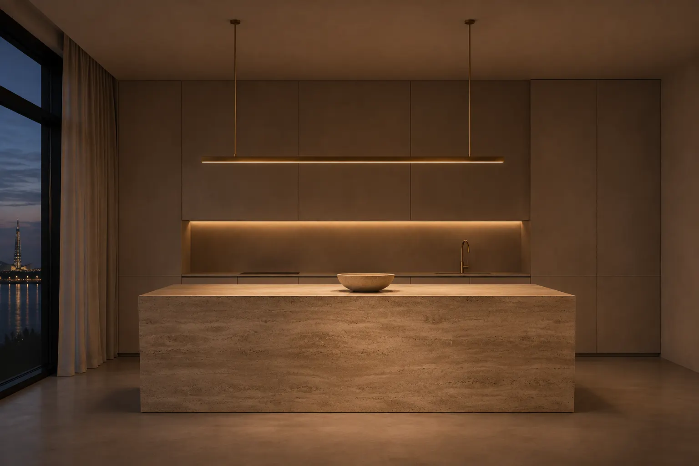
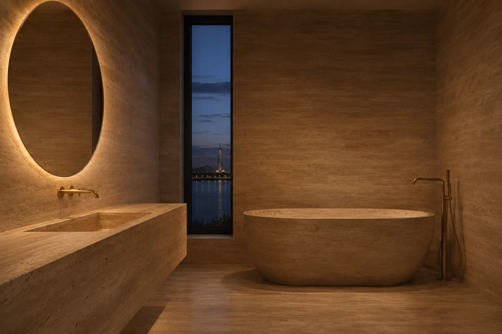

Квартира на КрестовскомApartment on Krestovsky Island
- ПлощадьArea
- 110 м²110 m²
- ГодYear
- 2025
- СрокDuration
- 8 месяцев8 months
- ОбъектProperty
- Новый дом у водыNew building by the water
- РаботыScope
- Проект, ремонт, комплектацияDesign, renovation, sourcing

ЗадачаThe brief
Пара купила квартиру в новом доме на Крестовском острове, из окон видно воду и Лахту. Хотели спокойный интерьер, в котором ничего не спорит с видом.
A couple bought an apartment in a new building on Krestovsky Island with a view of the water and Lakhta. They wanted a calm interior where nothing competes with the view.
Что сделалиWhat we did
Стены покрыли тёплой известковой штукатуркой. Пол залили микроцементом без порогов, он идёт одним полотном через всю квартиру. Кухню собрали вокруг острова из цельного травертина, из того же камня сделаны ванна и раковина. Шкафы встроили в стены и закрыли фасадами в цвет штукатурки, поэтому мебели для хранения в комнатах почти не видно.
The walls are finished in warm lime plaster. The microcement floor has no thresholds and runs through the whole apartment in one piece. The kitchen is built around an island of solid travertine, and the bath and basin are made of the same stone. Wardrobes are built into the walls behind fronts the colour of the plaster, so storage is almost invisible.
МатериалыMaterials
Известковая штукатурка, микроцемент, травертин, лён, букле
Lime plaster, microcement, travertine, linen, bouclé

